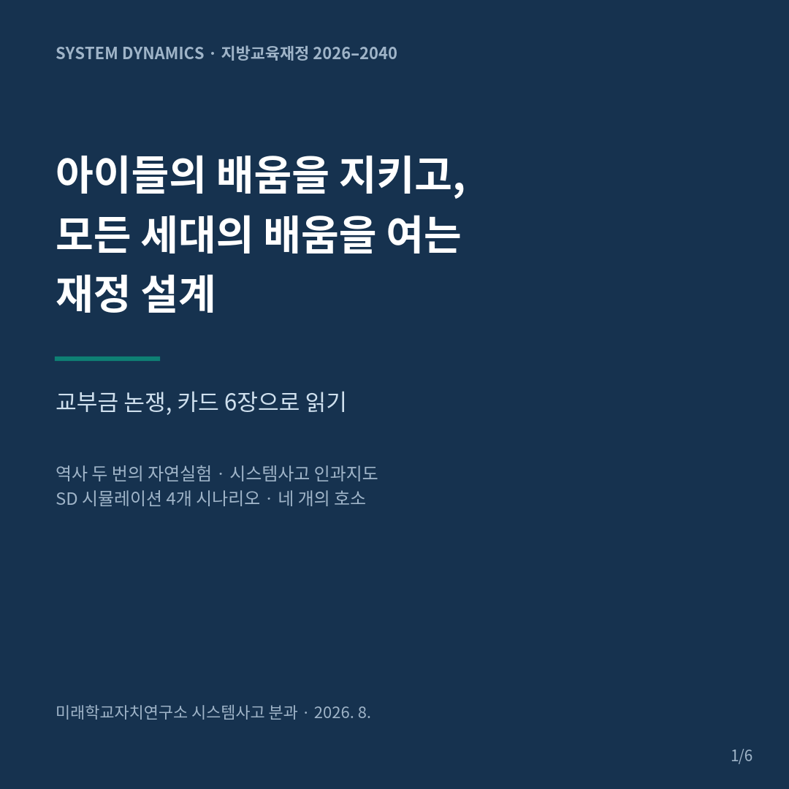
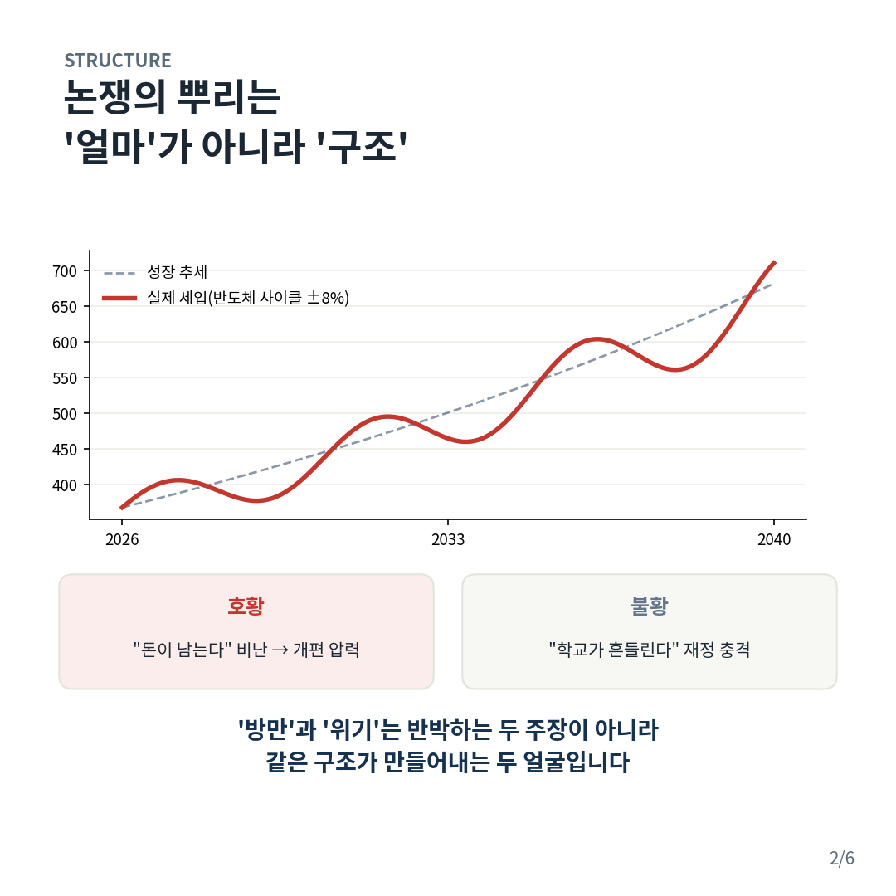
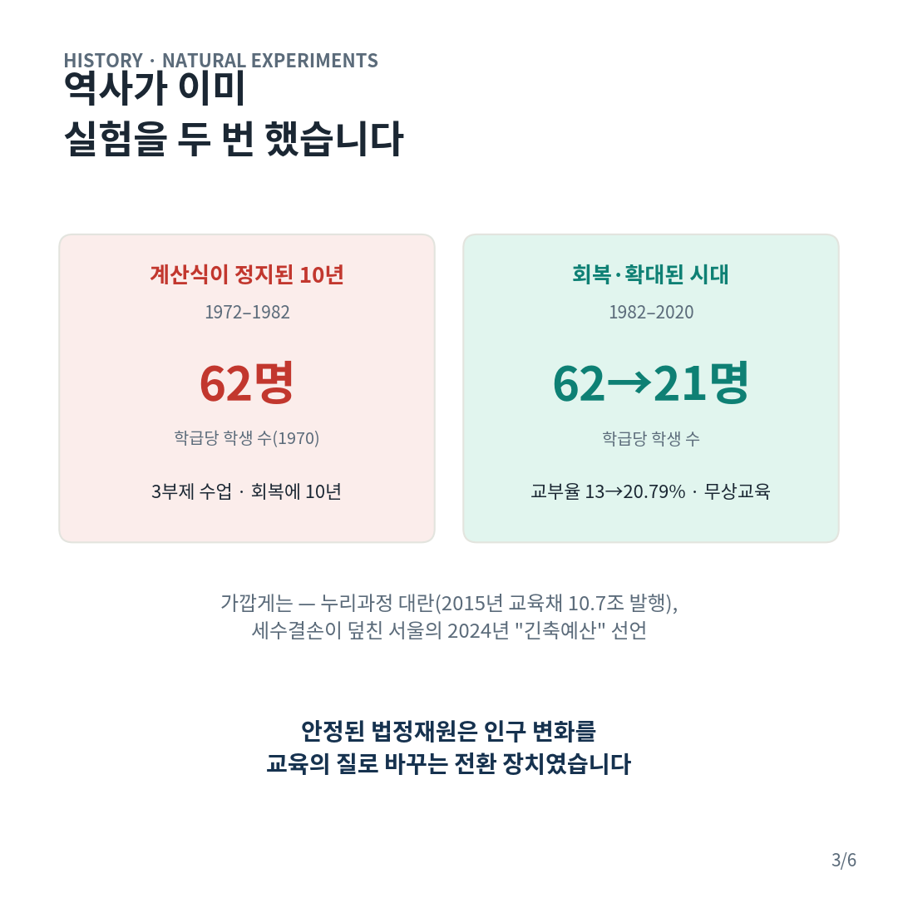
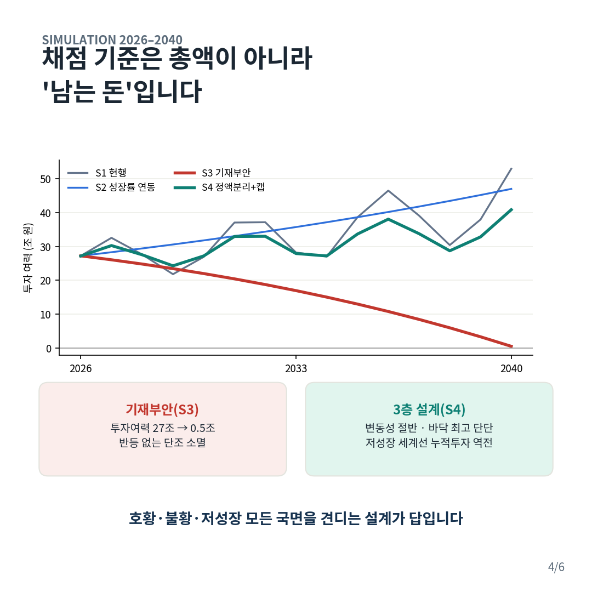
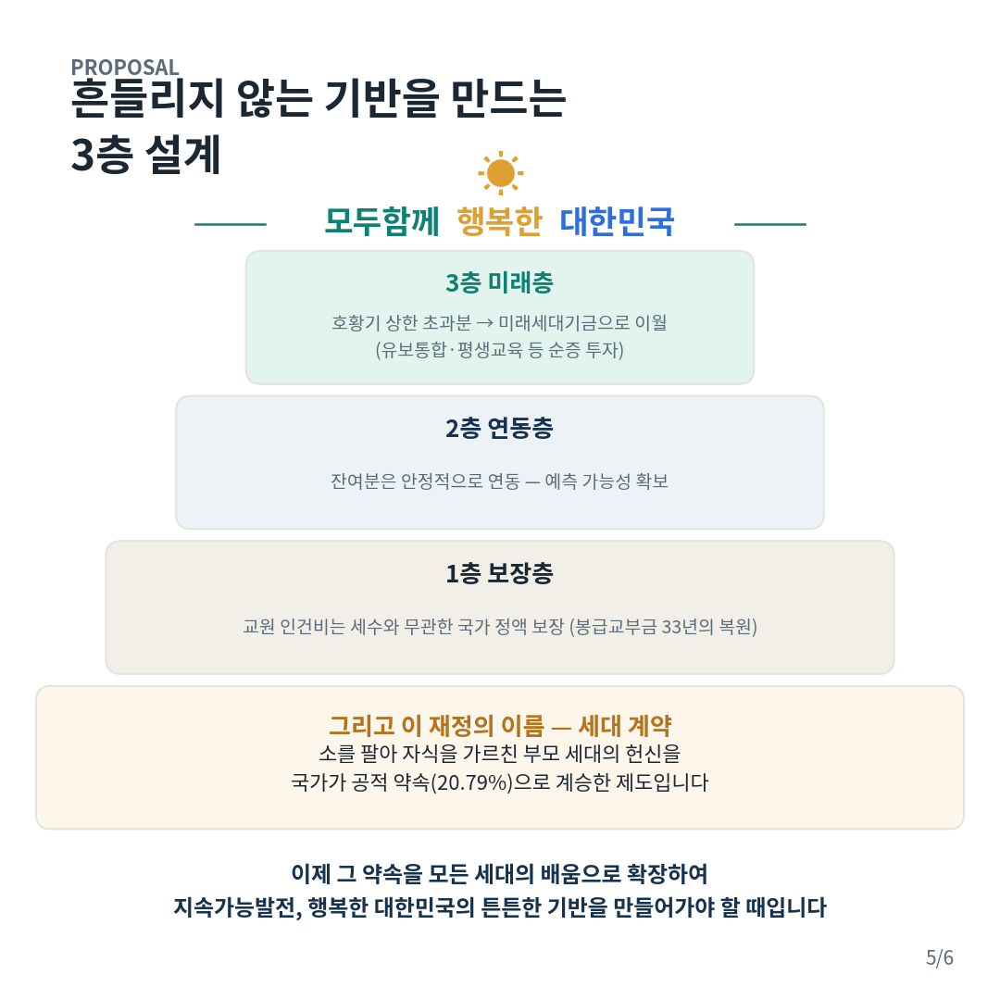
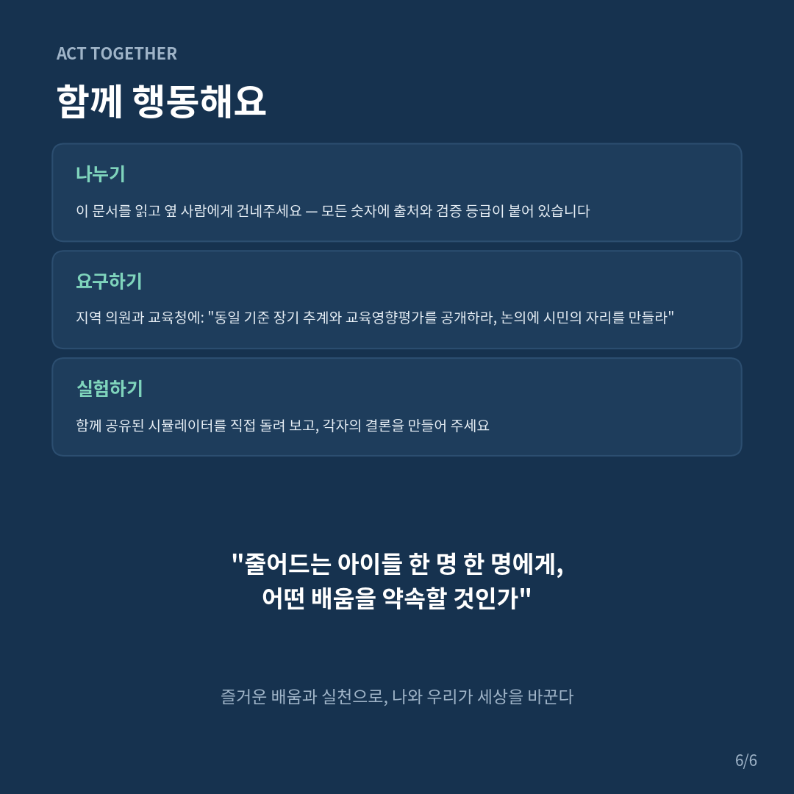

자료실
브라우저에서 바로 실행하는 도구, 인쇄해서 쓰는 활동지, 영상. 자유롭게 쓰시되 출처(미래학교자치연구소 시스템사고분과)를 밝혀 주세요.
직접 써 보는 도구
일상의 시스템사고나·가정·학교·사회의 반복되는 문제 하나를 골라 사건에서 구조로 내려가 인과순환지도를 그리고, 시뮬레이션으로 행태를 확인한 뒤 지렛대를 찾는 여덟 단계. 자료를 올리면 AI가 초안을 채워 줍니다. 작업은 기기에 자동 저장됩니다.실행하기
청소년 SNS 규제 SD 시뮬레이터네 개의 정책 시나리오를 나란히 놓고 참여·규제·대안 활동의 피드백이 어떻게 달라지는지 봅니다.실행하기
교부금 산정구조 시뮬레이터지방교육재정교부금 산정구조 다섯 시나리오 비교. 2026년 9월 정부 확정안 반영.실행하기
학교 민원 정책 지렛대 시뮬레이터학부모 민원을 협력자로 전환하는 개입 지점을 바꿔 가며 결과를 봅니다.실행하기
5Why 활동지 — 민원의 뿌리를 찾아서교사 모임에서 민원 사례 하나를 다섯 번 '왜'로 파고드는 활동지.실행하기
학교 민원 대응 체계의 시스템사고 분석인과순환과 시뮬레이션 기반 정책 제안, 웹 문서.읽기
인쇄물
카드뉴스 — 교부금 개편, 무엇이 문제인가






영상
시스템사고분과 시스템사고 소개와 2026 활동 및 참여 홍보 — 시스템사고가 무엇이고 분과가 2026년에 어떻게 공부하고 실천했는지, 그리고 함께하는 방법.
유튜브에 올린 뒤 주소를 넣으면 여기에 재생됩니다
2026 활동기록 1월~10월 (5분)
2026 활동기록 1월~10월 (5분)
함께 읽고, 구조를 묻고, 실천으로 잇다 — 2026년 1월부터 10월까지의 활동 기록, 5분.